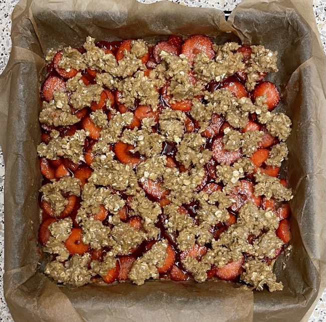
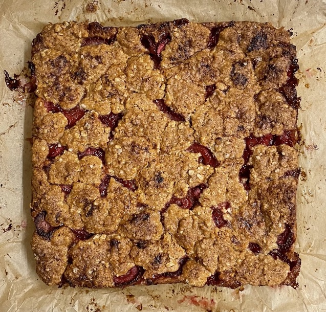

Jammy fruit bars
Dough
- Mix
- 170g light muscavado sugar
- 130g oats
- 130g plain flour
- 1 tsp baking powder
- ¼ tsp salt
- ¼ tsp baking soda
- Blitz in mixer till crumbs
- 170g unsalted butter cubed and chilled
- Add and mix in
Cake
- Line 20cm square cake tin with baking paper
- Gently press ⅔ (450g) of dough into even layer in tin
- Spread evenly over dough
- 340g blueberries / raspberries / strawberries / cherries
- 225g jam (as alternative to fruit)
- Add over
- lemon juice (more for less acidic fruits)
- ⅛ tsp salt
- Crumble over remaining dough
- Bake at 180°C for 45 mins
- Cool then cut into portions
Serving
Notes
- Made 7 Jan 2022: 100g strawberry jam and 185g strawberries after hulling
- Original recipe
Pics

